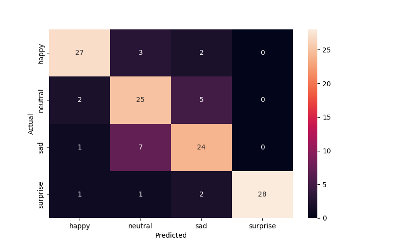

        <html>
        <head><title>Model Summary - 2024-04-10 14:17:16</title></head>
        <body>
        <h1>Model Configuration</h1>
        <pre>model:
  compile:
    learning_rate: 0.01
    optimizer: SGD
    optimizer_name: adam
  data:
    color_layers: 1
    color_mode: grayscale
    img_height: 48
    img_width: 48
    use_data_loaders: true
  layers:
  - filters: 64
    kernel_size:
    - 2
    - 2
    padding: same
    type: Conv2D
  - type: BatchNormalization
  - alpha: 0.1
    type: LeakyReLU
  - pool_size:
    - 2
    - 2
    type: MaxPooling2D
  - filters: 128
    kernel_size:
    - 2
    - 2
    padding: same
    type: Conv2D
  - type: BatchNormalization
  - alpha: 0.1
    type: LeakyReLU
  - pool_size:
    - 2
    - 2
    type: MaxPooling2D
  - filters: 256
    kernel_size:
    - 2
    - 2
    padding: same
    type: Conv2D
  - type: BatchNormalization
  - alpha: 0.1
    type: LeakyReLU
  - pool_size:
    - 2
    - 2
    type: MaxPooling2D
  - filters: 512
    kernel_size:
    - 2
    - 2
    padding: same
    type: Conv2D
  - type: BatchNormalization
  - alpha: 0.1
    type: LeakyReLU
  - pool_size:
    - 2
    - 2
    type: MaxPooling2D
  - filters: 128
    kernel_size:
    - 2
    - 2
    padding: same
    type: Conv2D
  - type: BatchNormalization
  - alpha: 0.1
    type: LeakyReLU
  - pool_size:
    - 2
    - 2
    type: MaxPooling2D
  - type: Flatten
  - activation: relu
    type: Dense
    units: 512
  - activation: relu
    type: Dense
    units: 128
  - type: Dense
    units: 64
  - type: BatchNormalization
  - type: ReLU
  - activation: softmax
    type: Dense
    units: 4
  train:
    batch_size: 64
    epochs: 40
    patience: 7
</pre>
        <h1>Model Summary</h1>
        <pre>Model: "sequential"
┏━━━━━━━━━━━━━━━━━━━━━━━━━━━━━━━━━━━━━━┳━━━━━━━━━━━━━━━━━━━━━━━━━━━━━┳━━━━━━━━━━━━━━━━━┓
┃ Layer (type)                         ┃ Output Shape                ┃         Param # ┃
┡━━━━━━━━━━━━━━━━━━━━━━━━━━━━━━━━━━━━━━╇━━━━━━━━━━━━━━━━━━━━━━━━━━━━━╇━━━━━━━━━━━━━━━━━┩
│ conv2d (Conv2D)                      │ (None, 48, 48, 64)          │             320 │
├──────────────────────────────────────┼─────────────────────────────┼─────────────────┤
│ batch_normalization                  │ (None, 48, 48, 64)          │             256 │
│ (BatchNormalization)                 │                             │                 │
├──────────────────────────────────────┼─────────────────────────────┼─────────────────┤
│ leaky_re_lu (LeakyReLU)              │ (None, 48, 48, 64)          │               0 │
├──────────────────────────────────────┼─────────────────────────────┼─────────────────┤
│ max_pooling2d (MaxPooling2D)         │ (None, 24, 24, 64)          │               0 │
├──────────────────────────────────────┼─────────────────────────────┼─────────────────┤
│ conv2d_1 (Conv2D)                    │ (None, 24, 24, 128)         │          32,896 │
├──────────────────────────────────────┼─────────────────────────────┼─────────────────┤
│ batch_normalization_1                │ (None, 24, 24, 128)         │             512 │
│ (BatchNormalization)                 │                             │                 │
├──────────────────────────────────────┼─────────────────────────────┼─────────────────┤
│ leaky_re_lu_1 (LeakyReLU)            │ (None, 24, 24, 128)         │               0 │
├──────────────────────────────────────┼─────────────────────────────┼─────────────────┤
│ max_pooling2d_1 (MaxPooling2D)       │ (None, 12, 12, 128)         │               0 │
├──────────────────────────────────────┼─────────────────────────────┼─────────────────┤
│ conv2d_2 (Conv2D)                    │ (None, 12, 12, 256)         │         131,328 │
├──────────────────────────────────────┼─────────────────────────────┼─────────────────┤
│ batch_normalization_2                │ (None, 12, 12, 256)         │           1,024 │
│ (BatchNormalization)                 │                             │                 │
├──────────────────────────────────────┼─────────────────────────────┼─────────────────┤
│ leaky_re_lu_2 (LeakyReLU)            │ (None, 12, 12, 256)         │               0 │
├──────────────────────────────────────┼─────────────────────────────┼─────────────────┤
│ max_pooling2d_2 (MaxPooling2D)       │ (None, 6, 6, 256)           │               0 │
├──────────────────────────────────────┼─────────────────────────────┼─────────────────┤
│ conv2d_3 (Conv2D)                    │ (None, 6, 6, 512)           │         524,800 │
├──────────────────────────────────────┼─────────────────────────────┼─────────────────┤
│ batch_normalization_3                │ (None, 6, 6, 512)           │           2,048 │
│ (BatchNormalization)                 │                             │                 │
├──────────────────────────────────────┼─────────────────────────────┼─────────────────┤
│ leaky_re_lu_3 (LeakyReLU)            │ (None, 6, 6, 512)           │               0 │
├──────────────────────────────────────┼─────────────────────────────┼─────────────────┤
│ max_pooling2d_3 (MaxPooling2D)       │ (None, 3, 3, 512)           │               0 │
├──────────────────────────────────────┼─────────────────────────────┼─────────────────┤
│ conv2d_4 (Conv2D)                    │ (None, 3, 3, 128)           │         262,272 │
├──────────────────────────────────────┼─────────────────────────────┼─────────────────┤
│ batch_normalization_4                │ (None, 3, 3, 128)           │             512 │
│ (BatchNormalization)                 │                             │                 │
├──────────────────────────────────────┼─────────────────────────────┼─────────────────┤
│ leaky_re_lu_4 (LeakyReLU)            │ (None, 3, 3, 128)           │               0 │
├──────────────────────────────────────┼─────────────────────────────┼─────────────────┤
│ max_pooling2d_4 (MaxPooling2D)       │ (None, 1, 1, 128)           │               0 │
├──────────────────────────────────────┼─────────────────────────────┼─────────────────┤
│ flatten (Flatten)                    │ (None, 128)                 │               0 │
├──────────────────────────────────────┼─────────────────────────────┼─────────────────┤
│ dense (Dense)                        │ (None, 512)                 │          66,048 │
├──────────────────────────────────────┼─────────────────────────────┼─────────────────┤
│ dense_1 (Dense)                      │ (None, 128)                 │          65,664 │
├──────────────────────────────────────┼─────────────────────────────┼─────────────────┤
│ dense_2 (Dense)                      │ (None, 64)                  │           8,256 │
├──────────────────────────────────────┼─────────────────────────────┼─────────────────┤
│ batch_normalization_5                │ (None, 64)                  │             256 │
│ (BatchNormalization)                 │                             │                 │
├──────────────────────────────────────┼─────────────────────────────┼─────────────────┤
│ re_lu (ReLU)                         │ (None, 64)                  │               0 │
├──────────────────────────────────────┼─────────────────────────────┼─────────────────┤
│ dense_3 (Dense)                      │ (None, 4)                   │             260 │
└──────────────────────────────────────┴─────────────────────────────┴─────────────────┘
 Total params: 1,096,452 (4.18 MB)
 Trainable params: 1,094,148 (4.17 MB)
 Non-trainable params: 2,304 (9.00 KB)
</pre>
        <h2>Test Accuracy</h2>
        <p>
1/2 ━━━━━━━━━━━━━━━━━━━━ 0s 21ms/step - accuracy: 0.8125 - loss: 0.4924
2/2 ━━━━━━━━━━━━━━━━━━━━ 0s 8ms/step - accuracy: 0.8125 - loss: 0.5270 

1/2 ━━━━━━━━━━━━━━━━━━━━ 0s 389ms/step
2/2 ━━━━━━━━━━━━━━━━━━━━ 0s 2ms/step  
</p>
        <h2>Accuracy Plot</h2>
        
        <h2>Classification Report</h2>
        <pre>              precision    recall  f1-score   support

       happy       0.87      0.84      0.86        32
     neutral       0.69      0.78      0.74        32
         sad       0.73      0.75      0.74        32
    surprise       1.00      0.88      0.93        32

    accuracy                           0.81       128
   macro avg       0.82      0.81      0.82       128
weighted avg       0.82      0.81      0.82       128

</pre>
        <h2>History</h2>
        <pre>Epoch 1: accuracy: 0.2967, loss: 1.3789, val_accuracy: 0.1609, val_loss: 1.6945, learning_rate: 0.0100
Epoch 2: accuracy: 0.3718, loss: 1.2496, val_accuracy: 0.3560, val_loss: 1.3010, learning_rate: 0.0100
Epoch 3: accuracy: 0.4103, loss: 1.1926, val_accuracy: 0.4607, val_loss: 1.1192, learning_rate: 0.0100
Epoch 4: accuracy: 0.4983, loss: 1.0771, val_accuracy: 0.4364, val_loss: 1.2732, learning_rate: 0.0100
Epoch 5: accuracy: 0.5772, loss: 0.9613, val_accuracy: 0.5033, val_loss: 1.2428, learning_rate: 0.0100
Epoch 6: accuracy: 0.6219, loss: 0.8897, val_accuracy: 0.4953, val_loss: 1.1662, learning_rate: 0.0100
Epoch 7: accuracy: 0.6387, loss: 0.8593, val_accuracy: 0.5941, val_loss: 0.9639, learning_rate: 0.0100
Epoch 8: accuracy: 0.6491, loss: 0.8300, val_accuracy: 0.6464, val_loss: 0.8761, learning_rate: 0.0100
Epoch 9: accuracy: 0.6627, loss: 0.8056, val_accuracy: 0.6363, val_loss: 0.9020, learning_rate: 0.0100
Epoch 10: accuracy: 0.6807, loss: 0.7842, val_accuracy: 0.6769, val_loss: 0.7943, learning_rate: 0.0100
Epoch 11: accuracy: 0.6865, loss: 0.7677, val_accuracy: 0.6140, val_loss: 0.9259, learning_rate: 0.0100
Epoch 12: accuracy: 0.6842, loss: 0.7593, val_accuracy: 0.7115, val_loss: 0.7083, learning_rate: 0.0100
Epoch 13: accuracy: 0.6961, loss: 0.7455, val_accuracy: 0.7077, val_loss: 0.7374, learning_rate: 0.0100
Epoch 14: accuracy: 0.6988, loss: 0.7297, val_accuracy: 0.6910, val_loss: 0.7529, learning_rate: 0.0100
Epoch 15: accuracy: 0.7022, loss: 0.7255, val_accuracy: 0.6661, val_loss: 0.8262, learning_rate: 0.0100
Epoch 16: accuracy: 0.7035, loss: 0.7232, val_accuracy: 0.6841, val_loss: 0.7677, learning_rate: 0.0100
Epoch 17: accuracy: 0.7130, loss: 0.7077, val_accuracy: 0.6450, val_loss: 0.9194, learning_rate: 0.0100
Epoch 18: accuracy: 0.7291, loss: 0.6660, val_accuracy: 0.7488, val_loss: 0.6337, learning_rate: 0.0020
Epoch 19: accuracy: 0.7380, loss: 0.6417, val_accuracy: 0.7521, val_loss: 0.6187, learning_rate: 0.0020
Epoch 20: accuracy: 0.7447, loss: 0.6357, val_accuracy: 0.7645, val_loss: 0.5938, learning_rate: 0.0020
Epoch 21: accuracy: 0.7437, loss: 0.6357, val_accuracy: 0.7577, val_loss: 0.6185, learning_rate: 0.0020
Epoch 22: accuracy: 0.7494, loss: 0.6210, val_accuracy: 0.7478, val_loss: 0.6222, learning_rate: 0.0020
Epoch 23: accuracy: 0.7492, loss: 0.6155, val_accuracy: 0.7641, val_loss: 0.5950, learning_rate: 0.0020
Epoch 24: accuracy: 0.7496, loss: 0.6240, val_accuracy: 0.7697, val_loss: 0.5846, learning_rate: 0.0020
Epoch 25: accuracy: 0.7564, loss: 0.6073, val_accuracy: 0.7494, val_loss: 0.6319, learning_rate: 0.0020
Epoch 26: accuracy: 0.7538, loss: 0.6058, val_accuracy: 0.7639, val_loss: 0.5923, learning_rate: 0.0020
Epoch 27: accuracy: 0.7642, loss: 0.5933, val_accuracy: 0.7711, val_loss: 0.5804, learning_rate: 0.0020
Epoch 28: accuracy: 0.7601, loss: 0.5889, val_accuracy: 0.7653, val_loss: 0.5994, learning_rate: 0.0020
Epoch 29: accuracy: 0.7621, loss: 0.5931, val_accuracy: 0.7671, val_loss: 0.5892, learning_rate: 0.0020
Epoch 30: accuracy: 0.7631, loss: 0.5878, val_accuracy: 0.7703, val_loss: 0.5829, learning_rate: 0.0020
Epoch 31: accuracy: 0.7638, loss: 0.5787, val_accuracy: 0.7434, val_loss: 0.6548, learning_rate: 0.0020
Epoch 32: accuracy: 0.7685, loss: 0.5766, val_accuracy: 0.7609, val_loss: 0.6031, learning_rate: 0.0020
Epoch 33: accuracy: 0.7752, loss: 0.5644, val_accuracy: 0.7732, val_loss: 0.5708, learning_rate: 0.0004
Epoch 34: accuracy: 0.7736, loss: 0.5581, val_accuracy: 0.7744, val_loss: 0.5718, learning_rate: 0.0004
Epoch 35: accuracy: 0.7801, loss: 0.5495, val_accuracy: 0.7709, val_loss: 0.5718, learning_rate: 0.0004
Epoch 36: accuracy: 0.7828, loss: 0.5443, val_accuracy: 0.7758, val_loss: 0.5750, learning_rate: 0.0004
Epoch 37: accuracy: 0.7797, loss: 0.5493, val_accuracy: 0.7742, val_loss: 0.5736, learning_rate: 0.0004
Epoch 38: accuracy: 0.7811, loss: 0.5504, val_accuracy: 0.7742, val_loss: 0.5825, learning_rate: 0.0004
Epoch 39: accuracy: 0.7819, loss: 0.5422, val_accuracy: 0.7750, val_loss: 0.5725, learning_rate: 0.0001
Epoch 40: accuracy: 0.7806, loss: 0.5417, val_accuracy: 0.7732, val_loss: 0.5735, learning_rate: 0.0001
</pre>
        <h2>Confusion Matrix</h2>
        
        <h2>Predicted Images</h2>
        
        </body>
        </html>
        